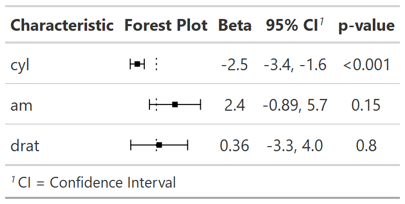

This function works with HTML output from the gt package only. Adds an in-line forest plot to a summary table.
add_inline_forest_plot(
x,
header = "**Forest Plot**",
spec_pointrange.args = NULL
)a gtsummary object
string indicating column header of new forest plot column.
Default is "**Forest Plot**".
named list of arguments that will be passed to
kableExtra::spec_pointrange(). Use this argument to modify the
default ascetics of the forest plot, e.g. color, size, symbols, etc.
Default is list(width = 250, cex = .75, col = "black", pch = 16)
gtsummary object
Estimates from tbl_regression() and tbl_uvregression() that have
been exponentiated are shown on the log scale.

Other gtsummary-related functions:
add_sparkline(),
as_ggplot(),
bold_italicize_group_labels(),
logistic_reg_adj_diff(),
style_tbl_compact(),
tbl_likert(),
theme_gtsummary_msk()
library(gtsummary)
#> #Uighur
#>
#> Attaching package: ‘gtsummary’
#> The following objects are masked from ‘package:bstfun’:
#>
#> tbl_split, trial
# Example 1 ----------------------------------
add_inline_forest_plot_ex1 <-
lm(mpg ~ cyl + am + drat, mtcars) %>%
tbl_regression() %>%
add_inline_forest_plot()